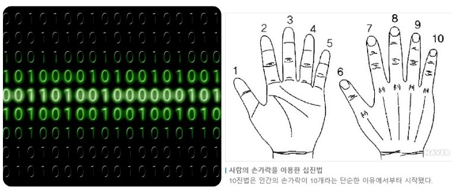

컴퓨터에서의 “진법”이란?
진법(進法, numeral system)은 숫자를 표현하는 방법 중 하나로,
컴퓨터 시스템은 다양한 진법을 사용하지만, 기본적으로 이진법(2진법)을 사용합니다.
아래는 컴퓨터에서 사용되는 대표적인 진법입니다.

컴퓨터의 언어 2진법과 인간의 언어 10진법
- 2진법 (Binary) → 0, 1로 표현하는 수 체계
- 8진법 (Octal) → 0~7 숫자로 표현
- 10진법 (Decimal) → 사람이 쓰는 기본 숫자
- 16진법 (Hexadecimal) → 0~9, A~F 숫자와 알파벳 조합
| 구분 | 2진법(Binary) | 8진법(Octal) | 10진법(Decimal) | 16진법(Hexadecimal) |
|---|---|---|---|---|
| 표현방법 | 0, 1전기 신호의 ON(1), OFF(0) | 0~7이진법을 3자리씩 묶어서 표현 | 0~9사람이 사용하는 일반적인 숫자 | 0~9, A~F(A=10, B=11 ~ F=15)이진법 4자리씩 묶어 표현 |
| 진법변환 | 255(10진수) → 11111111(2진수) | 11111111(2진수) → 377 | 11111111(2진수) → 255 | 11111111(2진수) → FF |
| 사용이유 | 전기 신호와 직접 대응, 컴퓨터 내부 연산 | 이진법보다 짧게 표현, 과거 시스템 호환 | 사람이 이해하기 쉬움 | 이진수 압축 표현, 개발에서 대용량 숫자 압축 |
| 적용예시 | 데이터 저장, 논리 회로, CPU 내부 연산 | UNIX 파일 권한설정 (chmod 755 등) | 사용자 인터페이스, 출력 화면, 계산기 등 | 메모리 주소, 색상 코드(#FF5733), 디버깅 |